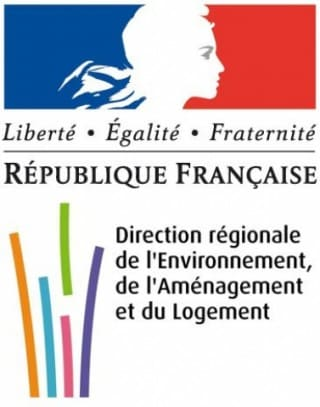
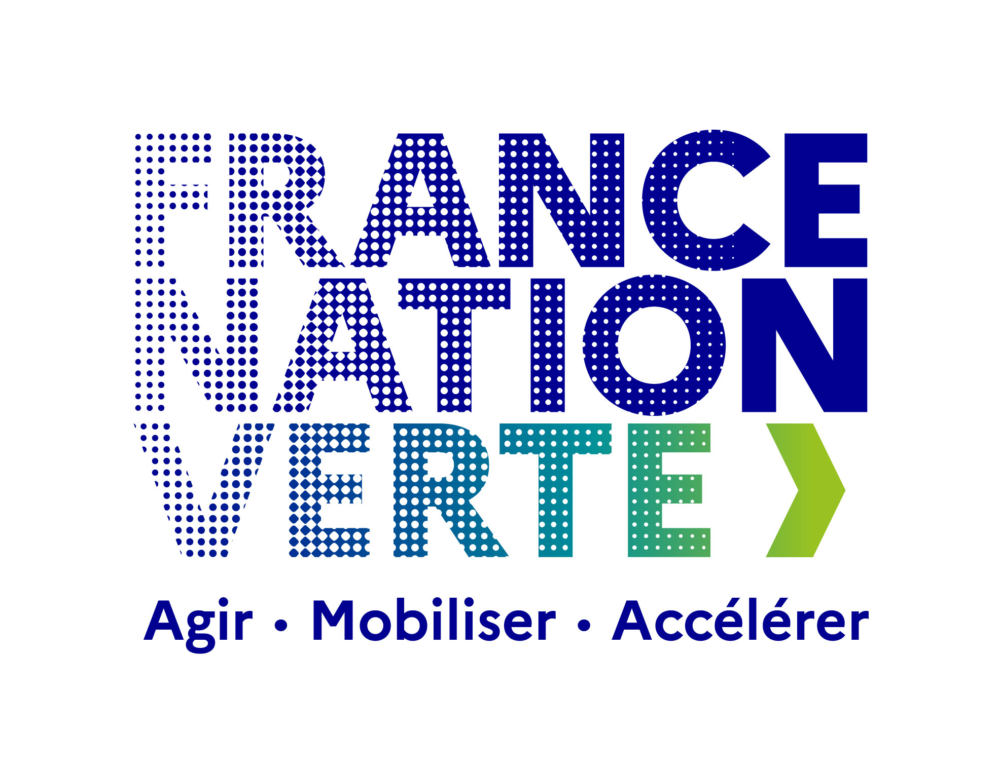
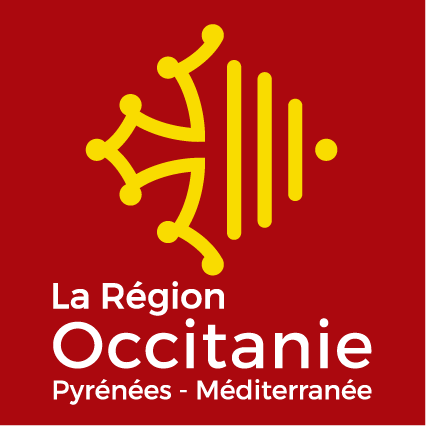
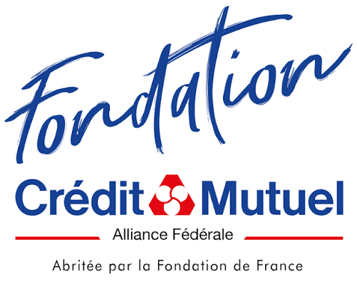
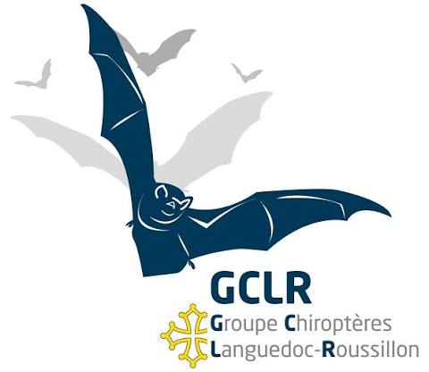
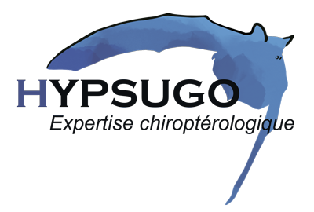

Inventaires acoustiques
Des enregistreurs détectent les ultrasons émis en vol afin d'identifier les espèces et mesurer leur activité.
Un vaste programme d'inventaire, de recherche de gîtes et de mobilisation citoyenne pour améliorer les connaissances et préserver les chauves-souris du territoire.
Les résultats du programme évolueront au fil des inventaires et seront mis à jour régulièrement.


Le CPIE des Causses Méridionaux coordonne une vaste campagne d'inventaires sur le Larzac méridional et ses contreforts.
Le projet croise plusieurs méthodes pour mieux connaître les espèces présentes, retrouver leurs gîtes, comprendre leurs déplacements et préparer des actions concrètes de conservation.
Chaque méthode apporte une information différente : espèces présentes, gîtes utilisés, effectifs, périodes d'occupation ou corridors de déplacement.
Des enregistreurs détectent les ultrasons émis en vol afin d'identifier les espèces et mesurer leur activité.
Maisons, granges, églises, moulins et autres bâtiments sont visités avec l'accord de leurs propriétaires.
Grottes et avens sont étudiés en période de reproduction, de transit, de rassemblement automnal et d'hibernation.
Les écoutes et observations ciblent les fissures et anfractuosités susceptibles d'abriter des espèces rupestres.
Ces opérations permettent de dénombrer les colonies et de préciser l'espèce ou le statut reproducteur lorsque nécessaire.
La modélisation aide à identifier les liaisons entre gîtes et terrains de chasse ainsi que les secteurs sensibles.

Deux jours de prospections, de rencontres avec les habitants et de recherches dans les granges, caves et combles du territoire.
Vous avez remarqué une colonie dans un grenier, une cave, une grange, derrière des volets ou dans un autre bâtiment ? Votre témoignage peut nous aider à découvrir de nouveaux gîtes.





